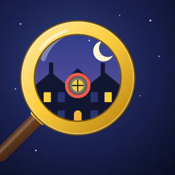

Second GlancePrivacy Policy
Last updated: October 26, 2026
Second Glance is a game made by Wolfhope (Harrison Wolfhope, Ohio, USA). This policy explains what happens to information when you play.
What we collect
We don't collect personal information. You don't create an account. Your progress (solved cases, stars, coins and settings) is stored only on your device.
Advertising (Google AdMob)
The free version shows ads from Google AdMob. To show and measure ads, Google's software may collect information such as your device's advertising identifier (only if you allow tracking), your approximate location based on your IP address, which ads you saw and tapped, and diagnostic data such as crash and performance logs.
- On iPhone and iPad, the game asks for permission before your advertising identifier can be used for tracking. You can change this any time in Settings → Privacy & Security → Tracking.
- In the European Economic Area, the UK and Switzerland, Google's consent form lets you choose how your data is used. You can change your choice in the game under Settings → Privacy choices.
- Learn how Google uses information from apps that use its services: policies.google.com/technologies/partner-sites.
Purchases
Purchases such as "Remove Ads" are processed by Apple through the App Store. We never see your payment details.
Children
Second Glance is not directed at children under 13 and we don't knowingly collect information from them.
Your choices
Deleting the game removes all game data from your device. To remove ads between scenes, use the one-time "Remove Ads" purchase in the game.
Changes
If this policy changes, we'll update this page and the date above.
Contact
Questions? See the support page.